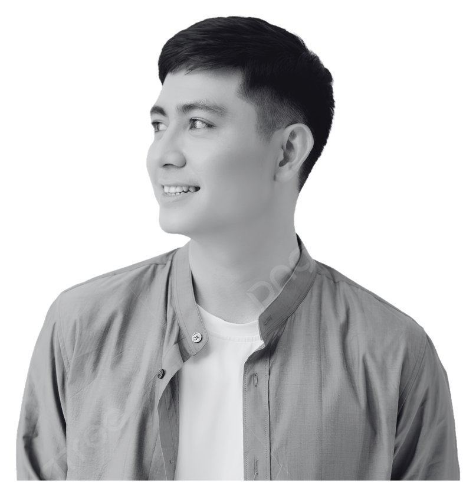

Web Application2024 / 01
Sistem Pengajuan Pengujian
Aplikasi pengajuan pengujian untuk kebutuhan UPTD Laboratorium Konstruksi Jawa Barat.
Web DevelopmentSystem AnalysisWorkflow
Bandung Barat, Indonesia • IT & Digital Improvement
Technical Support &
System Analyst
Menggabungkan dukungan teknis, analisis sistem, dan digitalisasi untuk membuat operasional lebih efektif dan terukur.

Selected projects
2024 — PresentProject yang menggabungkan pemetaan kebutuhan, pengembangan sistem, dan dukungan teknis.
Aplikasi pengajuan pengujian untuk kebutuhan UPTD Laboratorium Konstruksi Jawa Barat.
Website untuk kebutuhan internal dan client, disertai maintenance IT serta jaringan.
Capabilities
Technical + AnalyticalKlik setiap kemampuan untuk melihat cakupan dan tools yang digunakan.
Membangun website dan aplikasi internal sesuai alur bisnis serta kebutuhan pengguna.
Pengembangan aplikasi mobile lintas platform untuk mendukung proses operasional.
Instalasi, maintenance, diagnosis, dan perbaikan hardware maupun software pengguna.
Konfigurasi, pemeliharaan, dan monitoring jaringan serta perangkat CCTV.
Menganalisis masalah, memetakan proses, dan merancang digitalisasi untuk continuous improvement.
Membuat rancangan antarmuka dan kebutuhan visual pendukung komunikasi sistem.
Pengolahan data, pembuatan laporan performa, dan administrasi perkantoran.
Work experience
2024 — PresentPT Mekar Armada Jaya · New Armada Group
Mengontrol delivery, ketersediaan material, stok, dan progress order; menyusun laporan KPI; serta menganalisis masalah sistem logistik untuk continuous improvement dan digitalisasi.
PT Trans Antar Nusa Bird · Cititrans
Mengelola hardware, software, jaringan, CCTV, server, website internal, troubleshooting pengguna, dan koordinasi vendor untuk pengadaan serta instalasi perangkat.
PT Letmi ITB
Membangun aplikasi website pengajuan pengujian untuk mendukung kebutuhan UPTD Laboratorium Konstruksi Jawa Barat.
PT Diantara Intermedia
Membangun aplikasi website internal dan client serta melakukan maintenance perangkat IT, jaringan, pembaruan software, dan penanganan masalah teknis.
Education & certification
Keep learningD4 Teknik Informatika dengan IPK 3.92/4.00, didukung sertifikasi bidang office, analytics, networking, security, dan cloud.
D4 Teknik Informatika
IPK 3.92 / 4.00Rekayasa Perangkat Lunak
Software EngineeringSelected certifications
Punya tantangan sistem atau operasional?
Mari buat menjadi lebih efektif.